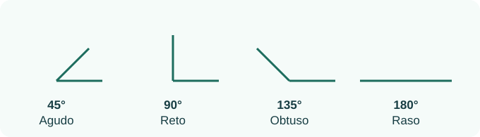
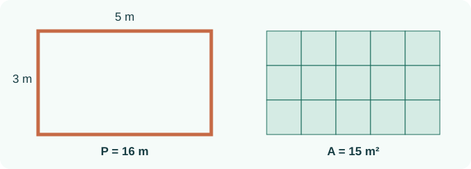
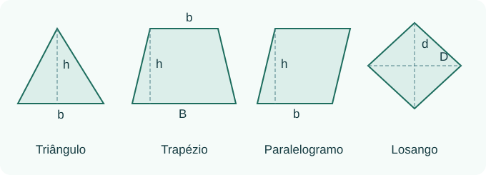
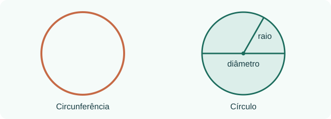
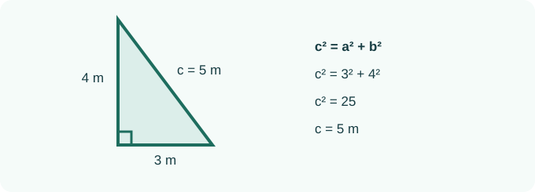
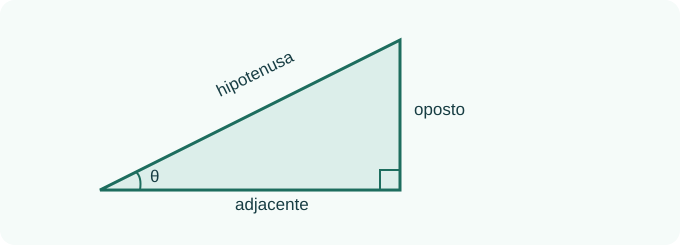
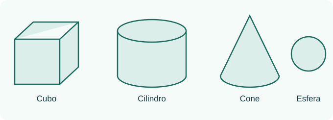
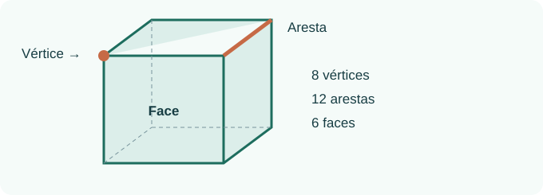

Preparação para o Vestibulinho ETEC · Módulo 05. Estude os conceitos, acompanhe os exemplos linha por linha e faça a fixação antes de passar ao próximo tópico.
Ângulo mede a abertura entre duas semirretas. Agudo: menor que 90°; reto: 90°; obtuso: entre 90° e 180°; raso: 180°. Complementares somam 90°; suplementares somam 180°. Opostos pelo vértice são iguais. Um polígono de n lados pode ser dividido em n−2 triângulos.
S = (n − 2) × 180°

Tipos de ângulos.
Exemplo resolvido
Dois ângulos internos de um triângulo medem 50° e 70°. Determine o terceiro e a soma interna de um hexágono.
x + 50° + 70° = 180°.
x = 180° − 120° = 60°.
Hexágono: S = (6 − 2) × 180° = 720°.
Cuidado: Não confunda a soma de um triângulo com a de um quadrilátero.
Exercício de fixação
Fixação 01 · autoral
Um triângulo tem ângulos 45° e 65°. Determine o terceiro.
Confira também o desenvolvimento no gabarito; respostas em formatos equivalentes podem exigir conferência manual.
Perímetro é contorno (unidade linear). Área é superfície (unidade quadrada). Quadrado tem quatro lados iguais; retângulo tem lados opostos iguais. Área do retângulo é base vezes altura.
Retângulo: P = 2(b + h), A = b × h; quadrado: P = 4L, A = L²

Contorno de um retângulo versus 15 quadrados unitários.
Exemplo resolvido
Terreno retangular de 18 m por 12 m. Calcule área e perímetro.
A = 18 × 12 = 216 m².
P = 2(18 + 12) = 2 × 30 = 60 m.
Cuidado: Não use m² para o perímetro.
Exercício de fixação
Fixação 02 · autoral
Uma sala mede 5 m por 3 m. Qual área e perímetro?
Confira também o desenvolvimento no gabarito; respostas em formatos equivalentes podem exigir conferência manual.
A altura é sempre perpendicular à base. Um triângulo ocupa metade de um paralelogramo de mesma base e altura. O trapézio tem bases paralelas. No losango, as diagonais são perpendiculares.
Triângulo A = bh2; paralelogramo A = bh; trapézio A = (B + b)h2; losango A = Dd2

Bases, alturas e diagonais nas figuras planas.
Exemplo resolvido
Trapézio com bases 20 m e 12 m e altura 8 m; triângulo com base 14 cm e altura 9 cm.
Trapézio: A = (20 + 12) × 8 ÷ 2.
A = 32 × 8 ÷ 2 = 128 m².
Triângulo: A = 14 × 9 ÷ 2 = 63 cm².
Cuidado: O lado inclinado não é necessariamente a altura.
Exercício de fixação
Fixação 03 · autoral
Um losango tem diagonais 12 e 8 cm. Qual a área?
Confira também o desenvolvimento no gabarito; respostas em formatos equivalentes podem exigir conferência manual.
Circunferência é a linha do contorno; círculo é a região interna. Raio liga o centro ao contorno; diâmetro passa pelo centro e mede dois raios. Use o valor de π informado.
d = 2r; C = 2πr; A = πr²

Circunferência é o contorno; o círculo inclui a região interna.
Exemplo resolvido
Piscina circular de raio 5 m; adote π = 3,14.
C = 2 × 3,14 × 5 = 31,4 m.
A = 3,14 × 5².
A = 3,14 × 25 = 78,5 m².
Cuidado: Não substitua o diâmetro na fórmula como se fosse raio.
Exercício de fixação
Fixação 04 · autoral
Uma praça circular tem diâmetro 20 m. Calcule a área (π = 3,14).
Confira também o desenvolvimento no gabarito; respostas em formatos equivalentes podem exigir conferência manual.
Em triângulos retângulos, a hipotenusa é oposta ao ângulo de 90° e é o maior lado. Catetos formam o ângulo reto. Se a incógnita é um cateto, subtraia os quadrados.
c² = a² + b² (c = hipotenusa)

Triângulo retângulo de catetos 3 m e 4 m e hipotenusa 5 m.
Exemplo resolvido
Uma escada alcança 4 m de altura e está a 3 m da parede. Encontre seu comprimento.
c² = 3² + 4².
c² = 9 + 16 = 25.
c = √25 = 5 m.
O comprimento é positivo.
Cuidado: Não some os lados diretamente nem use Pitágoras em qualquer triângulo.
Exercício de fixação
Fixação 05 · autoral
Um retângulo mede 6 m por 8 m. Qual sua diagonal?
Confira também o desenvolvimento no gabarito; respostas em formatos equivalentes podem exigir conferência manual.
Triângulos semelhantes têm lados correspondentes proporcionais e ângulos iguais. Em triângulo retângulo, seno usa cateto oposto/hipotenusa, cosseno adjacente/hipotenusa, tangente oposto/adjacente. Identifique o ângulo de referência.
sen θ = opostohipotenusa; cos θ = adjacentehipotenusa; tg θ = opostoadjacente

Catetos são identificados em relação ao ângulo θ.
Exemplo resolvido
Um poste de 3 m projeta sombra de 2 m. Uma árvore, sob o mesmo sol, projeta sombra de 8 m. Determine a altura.
32 = h8.
2h = 3 × 8 = 24.
h = 24 ÷ 2 = 12 m.
Cuidado: Use os lados que correspondem ao mesmo ângulo.
Exercício de fixação
Fixação 06 · autoral
Em triângulo retângulo, tg θ = 3/4 e cateto adjacente = 8 m. Determine o oposto.
Confira também o desenvolvimento no gabarito; respostas em formatos equivalentes podem exigir conferência manual.
Volume mede espaço ocupado. Prisma e cilindro têm volume área da base vezes altura. Pirâmide e cone têm um terço desse volume quando base e altura são iguais. Esfera depende do cubo do raio.
Cubo V = L³; prisma V = Ab·h; cilindro V = πr²h; cone/pirâmide V = Ab·h/3; esfera V = 4πr³/3

Exemplos de sólidos geométricos.
Exemplo resolvido
Túnel cilíndrico de 82 m de comprimento e 2 m de diâmetro; π = 3.
r = 2 ÷ 2 = 1 m.
Ab = 3 × 1² = 3 m².
V = 3 × 82 = 246 m³.
Cuidado: Diâmetro não é raio; volume tem unidade cúbica.
Exercício de fixação
Fixação 07 · autoral
Um cubo tem aresta de 1,2 m. Qual seu volume?
Confira também o desenvolvimento no gabarito; respostas em formatos equivalentes podem exigir conferência manual.
Poliedros têm faces planas poligonais, arestas (encontro de faces) e vértices (encontro de arestas). Cilindro, cone e esfera não são poliedros. Para poliedros convexos vale a relação de Euler.
V − A + F = 2

Elementos de um cubo.
Exemplo resolvido
Um poliedro convexo possui 12 vértices e 18 arestas. Quantas faces?
12 − 18 + F = 2.
−6 + F = 2.
F = 8.
Cuidado: V significa vértices nesta fórmula, não volume.
Exercício de fixação
Fixação 08 · autoral
Um cubo tem 8 vértices e 6 faces. Quantas arestas?
Confira também o desenvolvimento no gabarito; respostas em formatos equivalentes podem exigir conferência manual.
Ao trocar comprimento por unidade 100 vezes menor, multiplique por 100. Para áreas, eleve o fator ao quadrado; para volumes, ao cubo. 1 m³ = 1.000 L e 1 cm³ = 1 mL.
1 m = 100 cm; 1 m² = 10.000 cm²; 1 m³ = 1.000.000 cm³
Exemplo resolvido
Caixa de 2 m × 1,5 m × 1 m. Qual a capacidade em litros?
V = 2 × 1,5 × 1 = 3 m³.
3 × 1.000 = 3.000 L.
Cuidado: 1 m² não equivale a 100 cm².
Exercício de fixação
Fixação 09 · autoral
Uma piscina de 5 m × 4 m × 1,5 m tem capacidade de quantos litros?
Confira também o desenvolvimento no gabarito; respostas em formatos equivalentes podem exigir conferência manual.
🔽 Ver gabarito comentado
Resposta: 30.000 L
5 × 4 × 1,5 = 30 m³.
30 × 1.000 = 30.000 L.
Continue praticando
REVISÃO
Resolva as questões reais e complementares do módulo e confira cada etapa da resolução.